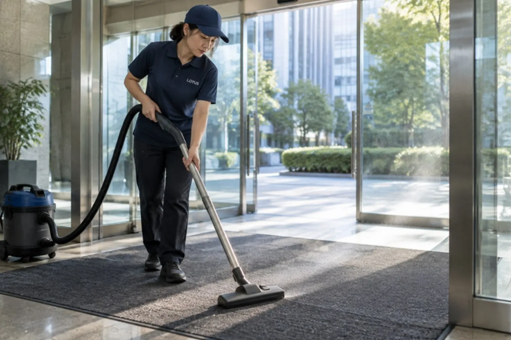

CLEAN CARE JOURNAL / 科学と自然の不思議
ほこりの正体は、外からやってくる。

もし、部屋の隅にたまるほこりの半分以上が、もともと外の砂や土だったとしたら? 窓を閉めていても、なぜか毎日たまっていく灰色のふわふわ。その正体を、少し科学の目で見てみます。
家のほこりの「6 割以上」は屋外から
2009 年、アメリカの研究者デビッド・レイトンさんとパロマ・ビーマーさんは、家の中のほこりがどこから来るのかを、計算のモデルで追いかけました。外の空気に漂う細かな粒子と、地面の土。それぞれがどれだけ家の中に入り、床にたまっていくのか。アメリカ化学会の学術誌に発表された結果は、「家のほこりの 6 割以上は、屋外に由来する」というものでした。
入り口は大きく分けて二つ。ひとつは、窓やすき間、換気を通って空気と一緒に入ってくる細かな粒子。もうひとつは、靴の裏などにくっついて運び込まれる土や砂です。窓を閉めていても、人が出入りするかぎり、外は少しずつ家の中に入ってきます。
ほこりは、ひとつの物質ではない
そもそも「ほこり」という名前の物質はありません。ほこりは、いろいろなものの寄せ集めです。服やタオル、カーテンから出る細かな繊維。髪の毛。外から入った砂や土の粒。花粉や、排気ガスのすす。食べこぼしのかけら。それらが静電気や湿気で互いにくっつき、空気の流れが弱まる部屋の隅や家具の裏で、あの灰色の固まりになります。
研究チームが注目したのは、この寄せ集めの中に、外の土に含まれていた成分がそのまま入ってくることでした。外の空気や土壌にあるものは、時間をかけて、家の中の床のほこりにも移っていく。家は外から切り離された箱ではなく、外とつながった空間なのです。
どんでん返し:掃除の主戦場は「入口」
「ほこりの大半は人の皮膚」という話を、聞いたことがあるかもしれません。もちろん皮膚のかけらも混ざっていますが、この研究が示したのは、外から入るものの存在感の大きさでした。だとすると、ほこり対策の考え方も少し変わります。たまったほこりを取ることと同じくらい、そもそも入れないことが効いてくる。
つまり、掃除の主戦場は部屋の隅だけではなく、外と中の境目、玄関やエントランスにもあるということです。靴の裏の砂は、入口で落とせなかった分だけ、廊下へ、部屋へと運ばれていきます。毎日拭いても床がざらつく建物は、部屋ではなく入口に原因があることも少なくありません。
日本の家は玄関で靴を脱ぐので、靴の裏から入る土は、もともと少なめかもしれません。けれど、オフィスや店舗、施設の多くは靴のまま入る場所です。一日に何百人もが出入りするエントランスでは、一人ひとりが運ぶわずかな砂が、積み重なって床の傷やくすみにもなっていきます。
結び:ほこりは、外とのつながりの記録
そう考えると、部屋の隅のほこりは、少し違って見えてきます。それは、その建物に毎日どれだけ人が出入りし、どんな道を歩いてきたかの、小さな記録です。ほこりをなくすことはできません。けれど、どこから来るのかを知れば、追いかけるのではなく、先回りすることはできます。
現場では
LOTUS クリーンケアサービスの定期清掃では、エントランスの床と玄関マットを、建物の中のほこり対策の出発点として扱っています。マットにたまった砂を取り、マットの外側の床を拭き、入口から奥へ向かう動線を順に整える。介護施設や店舗では、台車や車いすのタイヤも外の砂を運ぶので、入口まわりの頻度を他の場所より上げる提案をすることがあります。どこに砂がたまりやすいかは建物ごとに違うので、まずは入口と廊下の写真から、ご相談ください。
今日の持ち帰り
- 家のほこりの 6 割以上は、屋外に由来するという研究がある。
- ほこりはひとつの物質ではなく、繊維・砂・花粉などの寄せ集め。
- ほこり対策は、隅を拭くことと同じくらい、入口で止めることが効く。
出典:ScienceDaily「Where does all this dust come from?」(American Chemical Society 発表、2009 年 10 月) ／ Layton, D. W., & Beamer, P. I. (2009). Migration of contaminated soil and airborne particulates to indoor dust. Environmental Science & Technology(米国環境保護庁 HERO 文献記録)